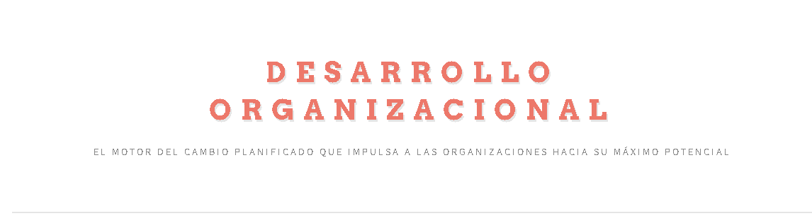

Gabriel A. Rosas R.
Desarrollador Web Front-end
Desarrollador Desktop
Tecnico en Computacion
Capacidad de aprender rápido, adquirir hábitos en la cantidad menor de tiempo posible, persona proactiva, disponible para seguir ordenes y seguir patrones.
Sobre mí
¡Hola de nuevo! Soy un apasionado del desarrollo y la tecnología. Mi trayectoria me ha permitido adquirir una sólida base en diversas áreas, desde la informática hasta la electricidad. Siempre busco nuevos desafíos para expandir mis conocimientos y aplicar mis habilidades en proyectos innovadores.
Educación
- Lic. Informática | Universidad de Oriente (UDONE) | 2018 - Actualidad
- Electricista | Instituto Nacional de Capacitación y Educación Socialista (INCES) | 2016 - 2017
Habilidades
Lenguajes de Programación & Frameworks
- C++
- Java
- Python
- Rust
- Dart
- Prolog
- Pascal
- JavaScript
- PHP
- Node.js
- React.js
Bases de Datos
- MySQL
- PostgreSQL
Herramientas & Otras Habilidades
- Figma
- Git
- GitHub
- Jira
Proyectos

Suarez Sport
Suarez Sport Web es una landing page promocional y de catálogo para una marca de ropa deportiva que se especializa en la personalización y estampados exclusivos. El sitio está diseñado para informar a los clientes sobre la gama de productos disponibles (camisas, pantalones, conjuntos, suéteres) y resaltar las ventajas de elegir una marca enfocada en la calidad y el diseño a la medida.
Suarez Sport Gym
Sport Gym Web es la landing page oficial del gimnasio, diseñada para atraer, informar y convertir visitantes en miembros. El sitio comunica de forma clara la propuesta de valor del gimnasio, presenta sus instalaciones y servicios, y facilita la interacción directa para la captación de clientes.
Crustaceos Expertos
El Sistema de Reconocimiento de Petrolisthes es una aplicación especializada desarrollada por estudiantes de la Universidad de Oriente (UDO-NE) en el marco de la asignatura de Sistemas Expertos. El objetivo principal es la identificación automatizada y precisa de ocho (8) especies distintas del género de crustáceos Petrolisthes, un grupo clave en los ecosistemas marinos.
Calculadora Paypal
Esta es una calculadora web interactiva diseñada específicamente para el mercado venezolano. Su objetivo principal es ayudar a los usuarios a estimar con precisión las cantidades de saldo PayPal (USD) que deben enviar o recibir después de aplicar las comisiones estándar de PayPal (5.4% + $0.30).

Desarrollado Organizacional
Esta página web es un centro de recursos educativos integral dedicado a la disciplina del Desarrollo Organizacional (DO). Fue concebida como un manual digital o una base de conocimiento para explorar las teorías, prácticas y aplicaciones del DO en el ámbito empresarial y de la gestión del cambio.
Semaforo Inteligente
Este proyecto es una implementación completa de un Sistema de Semáforo Digital Controlado Remotamente, desarrollado como prueba de concepto para un sistema de gestión de tráfico en entornos de Internet de las Cosas (IoT).
Juice Burguers Meals
Juicy Burguers & Meals es un robusto Sistema de Punto de Venta (POS) desarrollado como un proyecto universitario para simular y gestionar la operación diaria de un negocio de comida y bebidas.